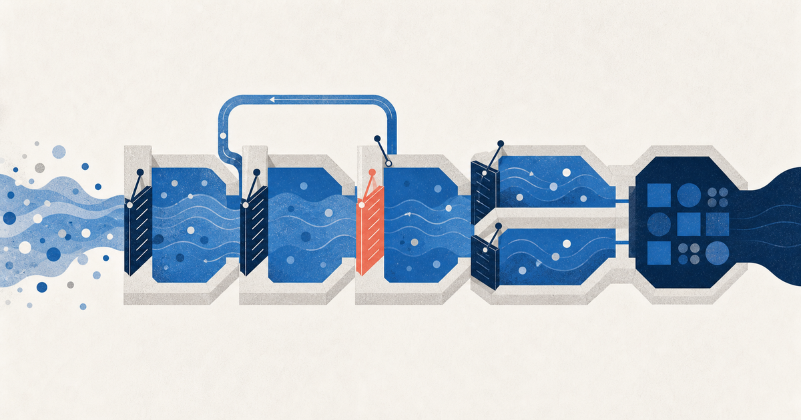

Черновик · Разработка и инженерные процессы
SDLC в классическом понимании: этапы, свойства и gates
Статус: черновик. Статья доступна по прямой ссылке и пока не входит в публичный индекс.

Короткий ответ
SDLC (Software Development Life Cycle) — это жизненный цикл создания и существования программной системы: от появления потребности и формулировки требований до вывода системы из эксплуатации. В некоторых источниках та же аббревиатура раскрывается как System Development Life Cycle — жизненный цикл информационной системы. Это близкие, но не полностью тождественные уровни: software lifecycle сосредоточен на ПО, system lifecycle охватывает также оборудование, людей, процессы и операционную среду.
Главный тезис: SDLC определяет, какие процессы и результаты должны быть покрыты, но не предписывает одну последовательность фаз. Процессы могут выполняться параллельно, итеративно и рекурсивно; команда сама собирает из них подходящую модель жизненного цикла. Gates не отменяют эту подвижность — они лишь требуют доказать готовность перед следующим значимым обязательством.1
Важно не перепутать четыре разных понятия:
- Жизненный цикл (SDLC) — какие процессы и виды работ должны быть покрыты от замысла до прекращения эксплуатации.
- Модель жизненного цикла — как эти работы организованы во времени: Waterfall, V-model, спиральная, итеративная, инкрементальная или гибридная модель.
- Метод управления работой — как команда планирует и выполняет короткие участки цикла: например, Scrum, Kanban или внутренний процесс компании.
- Governance — кто и на основании каких доказательств разрешает переходить дальше.
Классический SDLC — не обязательно Waterfall. Каркас может быть одним и тем же и в Waterfall, и в Agile: меняются порядок, размер инкрементов, степень формализации и частота возврата к предыдущим решениям.
В зрелом варианте классический каркас выглядит так:
Потребность и ограничения
↓
Требования
↓
Архитектура и системный дизайн
↓
Детальный дизайн
↓
Реализация
↓
Тестирование и верификация
↓
Поставка / внедрение
↓
Эксплуатация и сопровождение ──→ новые потребности и изменения
↓
Вывод из эксплуатации
Эта последовательность обобщает классическое описание Software Engineering Institute: потребности и ограничения, требования, архитектура, детальный дизайн, реализация, тестирование, внедрение и сопровождение. SEI отдельно подчёркивает, что этот список описывает необходимые виды деятельности, но сам по себе не задаёт конкретную модель процесса.2 Вывод из эксплуатации добавлен как самостоятельный этап из полного lifecycle, принятого в ранней модели NIST и в ISO/IEC/IEEE 12207.31
Почему нет одного «правильного» списка фаз
SDLC можно описывать на разных уровнях детализации. Например:
- инженерная команда может разделять требования, архитектуру и детальный дизайн;
- корпоративный стандарт может объединить их в одну фазу разработки;
- системный стандарт может начинать с инициирования и приобретения, а завершать выводом из эксплуатации;
- продуктовая команда может укрупнять цикл до discovery, delivery и operations.
В ранней общей модели NIST SP 800-64 Rev. 1 SDLC был описан пятью укрупнёнными фазами: initiation, acquisition/development, implementation, operations/maintenance, disposition. Это не противоречит инженерной схеме выше: NIST группирует более мелкие действия в крупные управленческие блоки. Более поздняя Rev. 2 посвящена прежде всего встраиванию безопасности в SDLC и не претендует на описание всей системы разработки.34
Поэтому полезно отличать:
- процессы и activities — повторяемые виды работ;
- phases/stages — логические группы работ в выбранной модели;
- milestones — значимые точки на плане;
- reviews — оценка результатов и доказательств;
- gates/KDP — управленческие решения о переходе дальше.
Девять этапов ниже — не «официально единственная» схема, а учебная карта, собранная из классических инженерных activities и полного пути от замысла до вывода системы из эксплуатации.
Весь цикл на одной странице
| Этап | Какую неопределённость снимает | Главный результат | Возможная контрольная точка |
|---|---|---|---|
| 1. Потребность и реализуемость | нужна ли система и реализуема ли она | границы, ожидаемый эффект, исходные риски | concept/scope gate |
| 2. Требования | что именно требуется и как это проверить | согласованный набор требований и критериев приёмки | requirements review / SRR |
| 3. Архитектура | каким способом достичь требуемых свойств | архитектурная схема, интерфейсы, ключевые решения | design review / SDR/PDR |
| 4. Детальный дизайн | достаточно ли решение конкретно для реализации | спецификации компонентов, данных и поведения | design review / CDR |
| 5. Реализация | существует ли воспроизводимо собираемый продукт | код, конфигурация, сборка и автоматические проверки | integration readiness/SIR |
| 6. Проверка и приёмка | соответствует ли продукт требованиям и реальной задаче | результаты V&V, дефекты, решение о приёмке | test/acceptance review / TRR/SAR |
| 7. Внедрение | готова ли система к безопасному запуску | план поставки, отката, мониторинга и поддержки | ORR/go-live |
| 8. Эксплуатация | сохраняет ли система ценность и управляемость | метрики, инциденты, исправления и новые требования | change/release gate |
| 9. Вывод из эксплуатации | можно ли безопасно прекратить работу | миграция/архивирование данных и отключение системы | decommissioning review |
Названия SRR, PDR, CDR, TRR, SAR и ORR в этой таблице — примеры из формальных инженерных практик, в частности NASA. Они не образуют обязательный универсальный набор SDLC-gates: в обычном проекте такие reviews могут отсутствовать, объединяться или заменяться более лёгкими критериями перехода.
Свойства хорошей фазы
Фаза — это не просто участок календаря. У неё должны быть определены:
- цель: какую неопределённость или риск команда должна снять;
- входы: какие решения, данные и ограничения уже существуют;
- работы: что команда делает внутри фазы;
- выходы: какие результаты и артефакты создаются;
- критерии качества: как понять, что результат достаточно хорош;
- ответственные: кто готовит результат и кто его принимает;
- exit criteria: что должно быть доказано для завершения;
- следующий потребитель: кто использует результат дальше.
В конкретном инкременте фаза или stage заканчивается не тогда, когда «прошло достаточно недель», а когда её выходы достигли согласованного уровня зрелости. Это не означает, что соответствующий процесс завершён навсегда: требования уточняются во время дизайна, дизайн проверяется прототипом, а эксплуатация порождает новые требования.
Этапы классического SDLC
1. Потребность, инициирование и оценка реализуемости
Главный вопрос: стоит ли вообще создавать систему и можно ли это сделать в заданных ограничениях?
На этом этапе формируется контекст: проблема пользователя или бизнеса, ожидаемый эффект, границы продукта, заинтересованные стороны, ограничения по срокам, бюджету, безопасности, регулированию и интеграциям. Здесь же проверяются ключевые предположения: техническая реализуемость, доступность данных, наличие компетенций и приемлемость рисков.
Типичные результаты: видение или описание проблемы, границы проекта, исходный business case, предварительная оценка рисков, стоимости и сроков, список заинтересованных сторон, первоначальный план проекта/разработки.
Свойства результата: проблема сформулирована через наблюдаемый эффект; границы явно ограничены; основные риски названы; решение не притворяется более определённым, чем оно есть.
Возможная контрольная точка: решение «инициировать разработку / провести discovery / остановить / купить готовое решение». Для больших систем это может называться concept review, MCR или SCR.
Частая ошибка: начать проект с решения («сделаем сервис на X») до проверки проблемы, пользователей и ограничений.
2. Выявление и управление требованиями
Главный вопрос: что именно система должна делать и при каких условиях?
Команда собирает потребности заинтересованных сторон, переводит их в системные и программные требования, уточняет сценарии использования, бизнес-правила, интерфейсы и ограничения качества. Помимо функциональности фиксируются нефункциональные требования: производительность, доступность, безопасность, приватность, совместимость, наблюдаемость, сопровождаемость и требования к данным.
Типичные результаты: SRS или продуктовая спецификация, use cases/user stories, критерии приёмки, доменная модель, интерфейсные контракты, матрица трассировки, список допущений и открытых вопросов.
Практический чек-лист хороших требований: они однозначны, проверяемы, непротиворечивы, реализуемы, трассируемы к цели/потребителю и имеют приоритет. «Система должна быть удобной» — пожелание; «95-й перцентиль ответа не более 300 мс при 500 RPS» — пример проверяемого требования.
Возможная контрольная точка: SRR (System Requirements Review) или утверждение baseline требований. В формальной инженерной среде такой review может быть частью gate. Смысл проверки — подтвердить, что требования достаточно полны, согласованы, достижимы, трассируемы и готовы служить основанием для дизайна. NASA именно так описывает цель software SRR.4
Частая ошибка: считать требования завершёнными после написания документа, не проверив их на сценариях, прототипах и конфликтующих ограничениях.
3. Архитектура и системный дизайн
Главный вопрос: какой принципиальный способ построения системы даст требуемые свойства при приемлемом риске?
Архитектура определяет крупные компоненты, границы ответственности, данные и их потоки, интеграции, топологию развёртывания, технологические решения и ключевые компромиссы. Архитектура должна показывать не только штатный сценарий, но и поведение при отказах, росте нагрузки, изменениях и угрозах.
Типичные результаты: описание архитектуры, диаграммы контекста/контейнеров/компонентов, ADR, модель данных, API и интерфейсные контракты, threat model, расчётные предположения о нагрузке, прототип или proof of concept для рискованных частей.
Свойства результата: требования трассируются к архитектурным решениям; критические атрибуты качества проверены хотя бы анализом или прототипом; границы компонентов понятны; решения и компромиссы записаны; известны оставшиеся риски.
Возможная контрольная точка: SDR (System Design Review) или PDR (Preliminary Design Review). В формальной инженерной среде PDR может быть частью gate и отвечает на вопрос, достаточно ли зрел предварительный дизайн, чтобы продолжать детальную разработку с приемлемым риском.
Частая ошибка: сделать красивую схему, не показав, каким образом она удовлетворяет требованиям, бюджету, операционным ограничениям и сценариям отказа.
4. Детальный дизайн
Главный вопрос: достаточно ли конкретно описано устройство каждого значимого участка, чтобы его можно было реализовать и проверить?
Здесь уточняются алгоритмы, структуры данных, схемы БД, состояния, протоколы, форматы ошибок, правила валидации, поведение интерфейса и детали взаимодействия компонентов. Граница между архитектурой и детальным дизайном не абсолютна: архитектурные решения могут содержать важные детали, а детальный дизайн должен сохранять связь с архитектурными принципами.
Типичные результаты: детальный дизайн, схемы данных и API, диаграммы последовательностей и состояний, технические спецификации, дизайн тестов, план реализации, обновлённые ADR.
Свойства результата: разработчик может реализовать решение без угадывания критических правил; тестировщик может вывести проверки; зависимости и миграции понятны; изменения конфигурации и обратная совместимость учтены.
Возможная контрольная точка: CDR (Critical Design Review) или утверждение baseline дизайна. В NASA-подобной формальной среде CDR может быть частью gate; NASA описывает его как проверку зрелости дизайна перед переходом к реализации и тестированию.5
Частая ошибка: детализировать всё подряд и заморозить решение раньше, чем проверены самые рискованные предположения.
5. Реализация
Главный вопрос: превращена ли спецификация в работающий, управляемый и воспроизводимо собираемый программный продукт?
Команда пишет код, конфигурацию, инфраструктуру и миграции, проводит ревью кода, интегрирует изменения, поддерживает сборку и тесты. В современном процессе качество не откладывается до окончания написания кода: статический анализ, проверки безопасности, модульные тесты и проверки сборки выполняются по мере появления изменений.
Типичные результаты: исходный код, конфигурация/IaC, миграции БД, артефакты сборки, автоматические тесты, актуальная документация, CI pipeline и журнал известных ограничений.
Свойства результата: код версионируется и воспроизводимо собирается; изменения проходят ревью; автоматические проверки стабильны; компоненты интегрируются по контрактам; технический долг и остаточные риски видимы.
Возможная контрольная точка: проверка готовности к интеграции или входу в системное тестирование. В более формальной среде это может быть Software Integration Review (SIR). Production Readiness Review (PRR) проводят позже, когда продукт и процессы поставки готовы к выпуску.
Частая ошибка: измерять прогресс строками кода или количеством закрытых задач, не проверяя работающий результат и интеграцию.
6. Тестирование, верификация и валидация
Главный вопрос: правильно ли мы построили систему и ту ли систему построили?
Верификация проверяет соответствие реализации спецификации: «сделали ли мы это по требованиям?». Валидация проверяет пригодность для реального пользователя и контекста: «решает ли это нужную проблему?». Нужны разные уровни и виды проверок: модульные, компонентные, интеграционные, системные, нагрузочные, security-, usability-, recovery- и acceptance-тесты — состав зависит от риска.
Типичные результаты: стратегия и план тестирования, тест-кейсы, автоматические тестовые наборы, тестовые данные и отчёты, реестр дефектов, матрица трассировки, доказательства производительности/безопасности/восстановления, решение о приёмке.
Свойства результата: требования покрыты проверками; тестовая среда и данные контролируемы; дефекты классифицированы по серьёзности и риску; результаты воспроизводимы; известны ограничения тестового покрытия.
Возможные контрольные точки: TRR (Test Readiness Review) перед началом формального тестирования и SAR/acceptance review перед приёмкой. ORR относится уже к готовности эксплуатации. В NASA-подобной формальной среде эти reviews могут быть частью gate. NASA прямо связывает TRR с готовностью ПО, среды, оборудования, документации и тест-кейсов к проведению тестов.6
Частая ошибка: превращать тестирование в финальный этап, куда впервые приносят целиком неизвестный продукт. В итеративной разработке тестирование идёт внутри каждого инкремента, но общая проверка готовности и приёмки всё равно может быть нужна.
7. Поставка, внедрение и переход в эксплуатацию
Главный вопрос: готова ли система безопасно и управляемо появиться в целевой среде?
Внедрение включает упаковку релиза, миграции, конфигурацию, управление версиями, наблюдаемость, резервное копирование и откат, управление изменениями, обучение пользователей и передачу ответственности операционной команде. Для production-ready системы важна не только работоспособность кода, но и способность команды поддерживать его после релиза.
Типичные результаты: release candidate, план и runbook развёртывания, release notes, план отката, мониторинг и оповещения, операционные процедуры, модель поддержки, учебная и пользовательская документация, подписанная приёмка.
Свойства результата: понятен способ установки и отката; production-среда подготовлена; критические риски приняты ответственным лицом; поддержка и мониторинг существуют; документация соответствует реально поставленной версии.
Возможная контрольная точка: ORR, go/no-go или разрешение на production-запуск. В NASA-подобной формальной среде ORR может быть частью gate; NASA использует его для проверки фактических характеристик системы, результатов тестирования, процедур, персонала и пользовательской документации.7
Частая ошибка: считать внедрение копированием бинарника, забывая о данных, секретах, миграциях, доступах, наблюдаемости, поддержке и плане восстановления.
8. Эксплуатация и сопровождение
Главный вопрос: продолжает ли система создавать ценность и оставаться безопасной, надёжной и изменяемой?
Сопровождение включает исправление дефектов, адаптацию к изменениям окружения, улучшение производительности и безопасности, поддержку пользователей, управление зависимостями, мониторинг и развитие продукта. Реальная система возвращает данные обратно в SDLC: инциденты и аналитика использования становятся входами для новых требований.
Типичные результаты: патчи и релизы, записи об инцидентах и проблемах, данные мониторинга, отчёты о ёмкости и безопасности, backlog изменений, актуальная документация, post-release review.
Свойства результата: изменения контролируемы; SLA/SLO и риски видимы; есть план обновлений и поддержки; технический долг не скрыт; каждая новая версия снова проходит подходящие проверки.
Возможные контрольные точки: одобрение изменения, проверка готовности релиза, security review, post-implementation review. Для существенного изменения цикл снова проходит необходимые процессы требований, дизайна и тестирования.
Частая ошибка: считать сопровождение «периодом после настоящей разработки». На практике эксплуатация и сопровождение часто занимают значительную часть жизненного цикла, а стоимость изменений и риски особенно зависят от качества предыдущих фаз.
9. Вывод из эксплуатации
Главный вопрос: как прекратить работу системы так, чтобы не потерять данные, не нарушить обязательства и не оставить уязвимую инфраструктуру?
Планируются миграция пользователей и данных, архивирование, отключение интеграций, отзыв доступов и секретов, удаление инфраструктуры, уведомление стейкхолдеров и подтверждение юридических/регуляторных требований.
Типичные результаты: план вывода из эксплуатации, доказательства миграции и архивирования, решение о сроках хранения данных, отзыв доступов, подтверждение отключения инфраструктуры, документация системы-преемника.
Возможная контрольная точка: decommissioning review или формальное закрытие. В ранней модели NIST disposition названа отдельной фазой жизненного цикла и включает завершение системы, а не только её создание и эксплуатацию.3
Milestone, review, gate и baseline — не одно и то же
Эти термины часто смешивают, хотя они обозначают разные вещи:
| Термин | Что это | Обязательно ли решение |
|---|---|---|
| Milestone | значимая точка на плане или календаре | нет |
| Review | проверка результатов, рисков и доказательств экспертами | не всегда |
| Gate / KDP | решение уполномоченной стороны о дальнейшем движении | да |
| Baseline | утверждённая версия требований, дизайна, конфигурации или плана, которая дальше меняется контролируемо | нет, это состояние артефакта |
На практике review часто готовит evidence для gate, а успешный gate утверждает новый baseline. Но это не одно событие по определению. Например, команда может провести архитектурное review и сформировать рекомендации, а решение о финансировании следующей фазы примет отдельный steering committee.
Baseline тоже не означает «заморозить навсегда». Это зафиксированная точка отсчёта: дальнейшее изменение разрешено, но должно быть видимым, оценённым и согласованным.
Отдельно существуют quality gates — пороги внутри рабочего процесса: все тесты прошли, нет critical vulnerabilities, покрытие не ниже установленного значения. Они могут быть автоматическими и частыми. Phase gate шире: он оценивает общую зрелость, ценность, стоимость, сроки и остаточный риск перед следующим крупным обязательством.
Что такое gate
Gate — это контрольная точка, на которой уполномоченная сторона принимает решение о дальнейшем движении. Возможные решения:
- go: переходить дальше;
- go with conditions: переходить при наличии зафиксированных условий и владельцев;
- hold: остановиться и собрать недостающие доказательства;
- rework: вернуться к предыдущей фазе;
- stop: закрыть проект или выбрать другой вариант.
Gate — это не обязательно большое совещание с презентацией. В маленьком проекте им может быть checklist в pull request, release approval или подтверждение владельца продукта. В критической системе gate требует независимой комиссии, baseline документов и формального протокола решения.
NASA называет такую точку KDP (Key Decision Point): уполномоченное лицо оценивает готовность проекта перейти в следующую фазу. Критерии при этом адаптируются под класс и риск проекта.8
Входные критерии, критерии успеха и evidence
У каждого формального review есть три разных элемента:
- entrance criteria: что должно быть готово, чтобы review вообще имело смысл проводить;
- success/exit criteria: какие свойства и результаты должны быть подтверждены;
- evidence: чем команда доказывает выполнение критериев.
Например, для TRR:
| Элемент | Пример |
|---|---|
| Entrance | определены границы теста, версия системы, окружение и ответственные |
| Success/exit | среда стабильна, тест-кейсы покрывают требования, критические блокеры устранены или приняты |
| Evidence | test plan, матрица трассировки, идентификатор сборки, checklist среды, отчёт о дефектах |
Критически важно: gate проверяет не обещание «мы почти готовы», а наблюдаемые свидетельства. Это могут быть рабочая сборка, результаты тестов, архитектурное решение, протокол threat modeling, план отката или подтверждение пользователя.
Пример минимального gate-маршрута
Для обычного бизнес-продукта не нужен космический набор из MCR, SRR, PDR, CDR, SIR, TRR, SAR и ORR. Практичный минимальный вариант:
| Переход | Контрольная точка | Что должно быть доказано |
|---|---|---|
| Идея → Discovery/Build | Scope gate | проблема, пользователь, ожидаемый эффект и ограничения понятны |
| Требования → Дизайн | Requirements review | требования проверяемы, приоритизированы и согласованы |
| Дизайн → Реализация | Design review | ключевые решения приняты, риски и интерфейсы понятны |
| Реализация → Тестирование | Integration/readiness review | есть стабильная сборка, автоматические проверки и тестовая среда |
| Тестирование → Релиз | Acceptance/release review | критерии приёмки выполнены, дефекты и остаточные риски приняты |
| Релиз → Эксплуатация | Go-live/ORR | развёртывание, откат, мониторинг, поддержка и документация готовы |
| Изменение → Новый релиз | Change/release gate | изменение проверено и не создаёт неприемлемый риск |
Практический вывод для Agile таков: контрольные точки не обязательно исчезают, но часто становятся чаще и меньше по масштабу. Каждый инкремент проходит свои критерии приёмки, а более крупные риски — отдельные архитектурные, security- или production-readiness reviews.
Где в SDLC находится безопасность и качество
Безопасность, качество, конфигурационное управление, документация и управление рисками — это не отдельные «финальные фазы». Они проходят поперёк всего цикла.
Например:
- требования безопасности формируются вместе с функциональными требованиями;
- threat modeling влияет на архитектуру;
- security testing выполняется до релиза, а не только после инцидента;
- журналирование, резервное копирование и восстановление проектируются вместе с развёртыванием;
- production-мониторинг поставляет новые данные для требований;
- изменения требований управляются через change control.
Именно такой подход рекомендует NIST: security controls и security activities нужно встраивать во все фазы SDLC, от инициирования до вывода из эксплуатации, а не добавлять после запуска системы.3
Как понять, что SDLC зрелый
Зрелость — не в количестве документов и не в числе review meetings. Зрелый цикл имеет:
- ясную связь между целями, требованиями, дизайном, кодом и тестами;
- явных владельцев решений и критериев приёмки;
- риск-ориентированные gates, а не одинаковую бюрократию для всех задач;
- независимую проверку там, где цена ошибки высока;
- возможность вернуться назад, если evidence не подтверждает готовность;
- воспроизводимую сборку, тестирование и поставку;
- обратную связь из эксплуатации в новые требования;
- адаптацию процесса под размер, критичность и неопределённость продукта.
Самая полезная формула SDLC выглядит так:
Каждая фаза должна уменьшать конкретный риск и выпускать проверяемый результат, а каждый gate должен отвечать на вопрос: достаточно ли доказательств, чтобы безопасно двигаться дальше?
Итог
Классический SDLC — это не «девять стадий, которые нужно пройти один раз и строго по порядку». Это карта полного жизненного цикла системы и набор ожидаемых инженерных результатов.
Его основное содержание:
- понять проблему и ограничения;
- зафиксировать проверяемые требования;
- выбрать и проверить архитектуру;
- довести дизайн до реализуемого уровня;
- создать воспроизводимый программный продукт;
- доказать его соответствие и пригодность;
- безопасно внедрить и передать в эксплуатацию;
- поддерживать, изменять и измерять систему;
- корректно вывести её из эксплуатации.
Gates нужны не для того, чтобы «закрывать бумажные этапы», а чтобы принимать осознанное решение о риске. В маленьком продукте это лёгкие checklist и approvals; в safety-critical, регулируемых или очень дорогих системах — формальные reviews с entrance/exit criteria, baseline-артефактами и независимым уполномоченным органом.
Глоссарий
Ниже собраны термины, использованные в статье. Английские варианты приведены потому, что именно они чаще всего встречаются в стандартах, документации и рабочих обсуждениях.
- SDLC (Software Development Life Cycle)
- Жизненный цикл создания, эксплуатации, изменения и вывода из эксплуатации программной системы.
- System Development Life Cycle
- Более широкое употребление SDLC: жизненный цикл информационной системы, включающий ПО, оборудование, людей, процессы и операционную среду.
- Software lifecycle
- Жизненный цикл программного продукта или программной части системы.
- Lifecycle model
- Способ организовать процессы во времени: Waterfall, V-model, spiral, iterative, incremental или hybrid.
- Process / процесс
- Повторяемый набор связанных работ, входов, результатов и правил.
- Activity / деятельность
- Конкретный вид работы внутри процесса, например анализ требований или тестирование.
- Phase / фаза
- Крупный участок жизненного цикла в выбранной модели.
- Stage / этап
- Логически выделенная часть фазы или жизненного цикла.
- Governance
- Система полномочий, правил и решений, определяющая, кто может разрешить дальнейшее движение.
- Waterfall / каскадная модель
- Модель, в которой основные работы организованы преимущественно последовательно.
- V-model
- Модель, связывающая этапы определения и дизайна с соответствующими уровнями проверки и валидации.
- Iterative / итеративная модель
- Модель, в которой решение постепенно уточняется через повторяющиеся циклы.
- Incremental / инкрементальная модель
- Модель, в которой система создаётся и поставляется частями.
- Spiral / спиральная модель
- Риск-ориентированная итеративная модель с планированием, анализом рисков, инженерной работой и оценкой результата в каждом цикле.
- Hybrid / гибридная модель
- Сочетание элементов нескольких моделей жизненного цикла.
- Agile
- Семейство принципов и практик итеративной разработки, а не одна конкретная SDLC-модель.
- Scrum
- Фреймворк организации работы через роли, события и ограниченные по времени итерации.
- Kanban
- Метод управления потоком работы с визуализацией задач и ограничением незавершённой работы.
- Gate
- Контрольная точка, в которой уполномоченная сторона принимает решение о дальнейшем движении.
- Phase gate
- Gate между крупными фазами или этапами, учитывающий зрелость результата, ценность, стоимость, сроки и остаточный риск.
- Quality gate
- Проверяемый порог качества внутри процесса, например отсутствие критических дефектов.
- KDP (Key Decision Point)
- Формальная точка принятия решения о готовности перейти дальше; в NASA термин близок к gate.
- Milestone / веха
- Значимая точка плана или календаря, не обязательно содержащая управленческое решение.
- Review / проверка
- Экспертная оценка результата, рисков и доказательств.
- Transition criteria
- Условия, выполнение которых позволяет перейти к следующему этапу или review.
- Entrance criteria
- Условия, которые должны быть выполнены до начала review или другой контрольной процедуры.
- Success/exit criteria
- Условия успешного завершения review или этапа.
- Go/no-go
- Решение запускать следующий шаг или остановить переход.
- Baseline
- Утверждённая версия требований, дизайна, конфигурации или плана, служащая контролируемой точкой отсчёта.
- Evidence / доказательства
- Наблюдаемые материалы, подтверждающие выполнение критерия: сборка, отчёт тестов, протокол решения или метрика.
- Decision authority
- Лицо или орган, имеющий полномочия принять решение на gate.
- Requirement / требование
- Проверяемое утверждение о том, что система должна делать или какими свойствами обладать.
- Functional requirement
- Требование к функции или поведению системы.
- Non-functional requirement
- Требование к качеству, ограничению или характеристике работы: производительности, безопасности, доступности и т. п.
- Acceptance criteria / критерии приёмки
- Условия, по которым заказчик или пользователь решает, что результат принят.
- SRS (Software Requirements Specification)
- Документ с систематизированными требованиями к программному обеспечению.
- Traceability / трассируемость
- Возможность связать цель или требование с дизайном, реализацией, тестом и результатом проверки.
- Traceability matrix
- Таблица связей между требованиями и доказательствами их реализации и проверки.
- Architecture / архитектура
- Крупная структура системы, её компонентов, связей, интерфейсов и ключевых ограничений.
- System design / системный дизайн
- Проектирование структуры и поведения системы на уровне, необходимом для реализации и интеграции.
- Detailed design / детальный дизайн
- Уточнение алгоритмов, данных, протоколов, состояний и поведения отдельных компонентов.
- Interface contract
- Согласованное описание того, как компоненты или системы взаимодействуют.
- ADR (Architecture Decision Record)
- Запись архитектурного решения, его контекста, альтернатив и последствий.
- C4 model
- Способ описывать архитектуру через уровни контекста, контейнеров, компонентов и кода.
- Threat modeling
- Систематический поиск угроз, уязвимостей и способов защиты на этапе проектирования.
- PoC (Proof of Concept)
- Эксперимент или прототип, проверяющий техническую осуществимость идеи.
- Business case
- Обоснование проекта через проблему, ожидаемый эффект, стоимость, альтернативы и риски.
- Stakeholder
- Человек, группа или организация, влияющие на систему или испытывающие влияние системы.
- Implementation / реализация
- Превращение дизайна в код, конфигурацию, инфраструктуру и другие поставляемые компоненты.
- Build / сборка
- Процесс и результат преобразования исходного кода и зависимостей в запускаемый артефакт.
- CI (Continuous Integration)
- Непрерывная интеграция изменений с автоматической сборкой и проверками.
- IaC (Infrastructure as Code)
- Описание инфраструктуры в коде, позволяющее воспроизводимо создавать и изменять окружения.
- Deployment / развёртывание
- Установка конкретной версии системы в целевое окружение.
- Release / релиз
- Подготовленная и идентифицированная версия продукта, предназначенная для передачи пользователям или эксплуатации.
- Release candidate
- Версия, потенциально готовая к релизу и проходящая финальные проверки.
- Runbook
- Пошаговая инструкция для развёртывания, эксплуатации, диагностики или восстановления системы.
- Rollback / откат
- Возврат системы к предыдущей рабочей версии или конфигурации.
- Observability / наблюдаемость
- Способность понимать внутреннее состояние системы по логам, метрикам, трассировкам и другим сигналам.
- Monitoring / мониторинг
- Регулярный сбор и анализ показателей работы системы.
- Incident / инцидент
- Событие, нарушившее или угрожающее доступности, качеству или безопасности системы.
- SLA / SLO
- SLA — договорённость об уровне сервиса; SLO — измеримая цель уровня сервиса.
- Backlog
- Упорядоченный список задач, изменений, дефектов и идей.
- Technical debt / технический долг
- Последствия временных или неидеальных решений, увеличивающие стоимость будущих изменений.
- Change control
- Управляемый процесс оценки, согласования, реализации и проверки изменений.
- Maintenance / сопровождение
- Исправление, адаптация, улучшение и поддержка системы после поставки.
- Disposition
- Завершение жизненного цикла системы, включая миграцию, архивирование, отзыв доступов и отключение.
- V&V (Verification and Validation)
- Проверка соответствия спецификации и проверка пригодности для реальной задачи.
- Verification / верификация
- Подтверждение, что продукт реализован в соответствии с требованиями и спецификацией.
- Validation / валидация
- Подтверждение, что продукт подходит пользователю и контексту применения.
- Defect / дефект
- Несоответствие продукта требованию, ожидаемому поведению или критерию качества.
- Test case / тест-кейс
- Описание условий, шагов, входных данных и ожидаемого результата проверки.
- SRR, PDR, CDR, SDR
- Формальные reviews требований и дизайна: System Requirements Review, Preliminary Design Review, Critical Design Review и System Design Review.
- TRR, SAR, ORR
- Reviews готовности к тестированию, приёмке и эксплуатации: Test Readiness Review, System Acceptance Review и Operational Readiness Review.
- SIR, PRR
- Software Integration Review и Production Readiness Review — проверки готовности к интеграции и поставке.
- MCR, SCR
- Mission Concept Review и System Concept Review — ранние проверки концепции и реализуемости в формальных инженерных программах.
- Security review
- Проверка архитектуры, кода, конфигурации или процесса на неприемлемые риски безопасности.
- Production readiness
- Готовность продукта, окружения, процессов поставки, мониторинга и поддержки к работе в production.
- Safety-critical
- Система, отказ которой может привести к угрозе жизни, здоровью, безопасности или существенному ущербу.
- Residual risk / остаточный риск
- Риск, остающийся после применения запланированных мер контроля.
Источники
-
IEEE/ISO/IEC 12207-2026, “Software life cycle processes” — действующий стандарт: общий процессный каркас от замысла до retirement, возможность параллельного, итеративного и рекурсивного применения процессов и построения собственной модели из stages. ↩ ↩2
-
NIST SP 800-64 Rev. 1 — ранняя общая пятифазная модель SDLC: initiation, acquisition/development, implementation, operations/maintenance и disposition. ↩
-
SEI, “Rethinking the Software Life Cycle” — перечень типичных SDLC activities и оговорка, что они не задают конкретную модель разработки. ↩
-
NIST SP 800-64 Rev. 2, “Security Considerations in the System Development Life Cycle” — руководство по встраиванию security activities и controls во весь SDLC; общий system development и governance находятся за пределами его основной темы. ↩
-
NASA Software Engineering Handbook, SWE-019 и Entrance/Exit Criteria, SRR — роль requirements review и phase transition criteria. ↩
-
NASA Software Engineering Handbook, CDR criteria — назначение Critical Design Review перед implementation/testing. ↩
-
NASA Software Engineering Handbook, TRR criteria — условия готовности к тестированию. ↩
-
NASA Software Engineering Handbook, ORR criteria — условия готовности к operational use. ↩
-
NASA Software Engineering Handbook, KDP and phase transitions — связь phase transition criteria, formal reviews и Key Decision Points. ↩